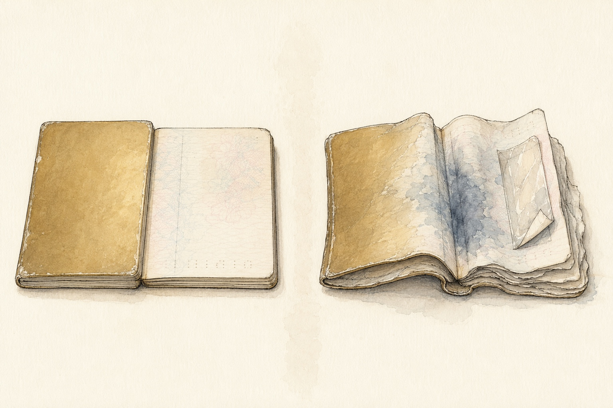

Can You Travel with a Damaged Passport?
Travel Document Vault
Key Takeaways
- Not all wear is damage. A creased cover is fine. Water damage, torn pages, or smudged security features are not.
- Airlines refuse boarding if they think a passport is damaged - they are liable for boarding an invalid document and will err on the side of caution.
- Spot damage days or weeks before your trip gives you time for emergency renewal. The day before is a crisis.
- If you are turned away at the gate, ask your embassy about an emergency travel document - same-day issuance is possible.
- A digital copy is worth most when you are abroad - a consular officer can establish who you are from a scan far faster than from your account of it. Scan your passport before you travel.
You're standing in the airport queue with your passport in hand when you notice the back cover has warped and the pages inside feel damp - and your flight leaves in two hours. You tell the gate agent, who pauses, then picks up the phone. You are not boarding today.
It is one of the most preventable travel disasters, because passport damage - from water, wear, or accidents - can ground you at the gate even though your document is technically valid. Understanding what counts as damage, what officials will accept, and what to do if it happens is the difference between a cancelled trip and a crisis averted hours before departure.
What Actually Counts as Passport Damage
This is where most people panic unnecessarily: a bent corner on the cover isn't damage, and neither is a small crease from sitting in your back pocket. Airlines and border officers know passports get used, so minor cosmetic wear is expected.
Damage means something that compromises the document's security features or readability. Water damage is the classic case: the ink bleeds, the pages swell or curl, and the signature page becomes illegible. Torn or missing pages count too, along with a damaged security hologram, a broken spine, or anything that obscures your personal information or biometric data.
Most critically, the machine-readable zone - the black-and-white stripe at the bottom of your data page - has to stay intact. Border scanners may be unable to read it once it's damaged.

The reason this matters is that airlines bear the liability if they board someone with an unacceptable document. Board with a damaged passport, get refused entry at the far end, and the authorities can fine the airline for carrying you. The airline also has to cover the cost of flying you home.
No gate agent wants that paperwork, so they err decisively on the side of caution. A passport that looks questionable gets refused, full stop.
You Spot Damage Days or Weeks Before Travel
Spotting damage with time to spare is the best-case scenario, because you still have room to act. The moment you notice something amiss - a cracking cover, water stains, ink bleeding, anything unusual - contact your passport authority rather than waiting to see if it gets worse or assuming it'll be fine on the day.
Your first stop should be your own country's official passport office website, because that's the one place where the current rules and processing times are guaranteed to be right, and both shift more often than people expect. If you're unsure whether your particular passport will still be accepted, the passport office is the only body whose answer actually counts. An airline forum will not save you at the desk.
A few things to confirm before you go. Urgent and fast-track services usually exist, but they don't all cover damaged passports, and the very fastest tier is often restricted to straightforward renewals. Check which service your situation qualifies for before you book an appointment.
A damaged passport also tends to mean applying in person rather than by post. In some countries the office that handles urgent cases is a different place entirely from the one that simply accepts applications, and turning up at the wrong counter costs you a day you probably don't have.
Start the process the moment you discover the damage. Booking flights and hoping the renewal lands in time is a gamble that fails constantly, especially in summer when passport offices are overwhelmed.
Travel Document Vault keeps encrypted scans of your family's passports on your own device, so when damage happens you can show the passport office or embassy your passport number, issue date and identity straight away instead of waiting on official records. It's a one-time purchase with no subscription: Download on the App Store and Google Play.
Damage Discovered at the Airport
Now for the harder version: you're in the check-in queue or at the gate and you notice damage you missed earlier, or the agent spots it the moment you hand over your passport.
Stay calm and be honest. Tell the gate agent the damage has only just become apparent to you, rather than trying to hide it or downplay it - they've seen damaged passports before and will spot the truth immediately.
If the damage really is minor, a small crease that doesn't affect any text or security feature, the agent may accept it. If it's more substantial they'll refuse boarding, and there's no arguing with that.
Once boarding is refused, you have limited options:
- Rebook on a later flight. Contact your airline or booking agent and explain what happened. In many cases they will rebook you at no extra cost once the reason is a damaged document (not a no-show or voluntary cancellation). Use this time to get your passport sorted.
- Apply for an emergency travel document. Contact your nearest embassy or consulate immediately. Explain that you have a confirmed flight and need to travel urgently. If you are still at the airport, many embassies can issue an emergency travel document the same day - but you must act quickly and show proof of your booking.
- Accept the cancellation. If neither option works and the trip cannot be salvaged, ask your airline what it can do. Some will rebook you or offer a credit as goodwill once you explain. Most airline terms treat a document problem as the passenger's own responsibility, though, so there's no automatic refund to claim.
If the gate agent says no, don't argue and don't try to board anyway. That only creates bigger problems. The airline can bar you from future flights, immigration authorities can fine you, and in some countries they can prosecute you for trying to travel on a document they have already judged invalid.
Emergency Passport Replacement Timelines
Published processing times move around through the year, and they climb in summer when passport offices are busiest. Rather than trust a figure you read somewhere, check the current one at source before you commit to a travel date:
- Confirm the fast-track tier covers damage. Paying for the quickest option doesn't automatically mean it applies to a damaged document, so check first.
- Plan to attend in person. A damaged passport almost always needs someone to inspect it and take it out of circulation, which a postal application can't do.
- Ask which office handles urgent cases. In many countries it isn't the same counter that takes routine applications, so find out before you cross town for nothing.
- Bring proof of travel. Booking confirmations are what unlock the faster routes, so have them with you rather than promising to email them later.
The pattern holds everywhere though. The closer you are to departure, the fewer routes stay open, and the ones that remain need you to turn up in person with your damaged passport and proof of travel. Discovering damage three weeks out is an inconvenience. Discovering it three days out is a different problem entirely.
Why Digital Copies Save the Day
When you need to replace a damaged passport urgently, one thing slows everything down: proving who you are. The passport office needs to verify that the replacement is going to the legitimate owner, not someone with a stolen identity.
A clear digital photo of your passport helps here. Keep the data page, the front cover and the back cover, and you can hand over your passport number and identity details on the spot instead of hunting for them.
This is especially valuable if you are abroad when your passport is damaged and need an emergency travel document from your embassy. Consular officers work faster when they can see a scan of your original passport right in front of them.
Store your digital copies somewhere encrypted and offline - not Google Photos or iCloud shared with others. Travel Document Vault is built for exactly this use case: passport photos encrypted on your device only, accessible instantly if something goes wrong.
Before you rely on this: it's a blog, not an official source. Rules and details change, and your situation may be different. We check what we publish, and we can still be wrong or out of date. If something here matters to your plans, confirm it with the authority that handles it before you act.
Frequently Asked Questions
What counts as a damaged passport?
Damage includes water damage, ink bleeding, torn or missing pages, significant creasing, damaged seals or security features, or anything that obscures your personal information or biometric data. Minor wear like small creases at the cover edge is acceptable. The rule of thumb: if you cannot read your information clearly or the security features are compromised, it is damaged.
Can airlines refuse boarding because of passport damage?
Yes. Airlines are liable if they board someone with an invalid travel document and that person is denied entry or removed. Gate agents therefore err on the side of caution - a passport with water damage or missing pages may be deemed unacceptable even if it is still technically valid.
What should I do if I spot passport damage before my trip?
Contact your passport authority straight away rather than waiting to see whether it gets worse. Your country's official passport office website is where you'll find the current rules, since processing times and eligibility change through the year. Ask specifically whether the fast-track tier accepts a damaged passport, because the quickest service is often reserved for simple renewals. If replacement will not finish before you travel, ask your embassy whether an emergency travel document is possible instead.
What if my passport is damaged at the airport?
Inform the gate agent immediately and explain when the damage occurred. They may accept the passport if the damage is minor and your information is still legible and secure. If they refuse boarding, ask whether an emergency travel document from your embassy is possible for the trip, or whether you can rebook on a later flight once you've obtained a new passport. Do not attempt to travel if the gate agent says no - boarding with a rejected document will cause much bigger problems.
How quickly can I get a new passport if mine is damaged?
It depends where you are and how close your trip is, and published processing times shift through the year, so check the current figure on your passport authority's own site rather than relying on a number from anywhere else. Faster routes generally exist, but they narrow as your departure date approaches and usually require you to apply in person with the damaged passport and proof of travel. Start the process the day you notice the damage.